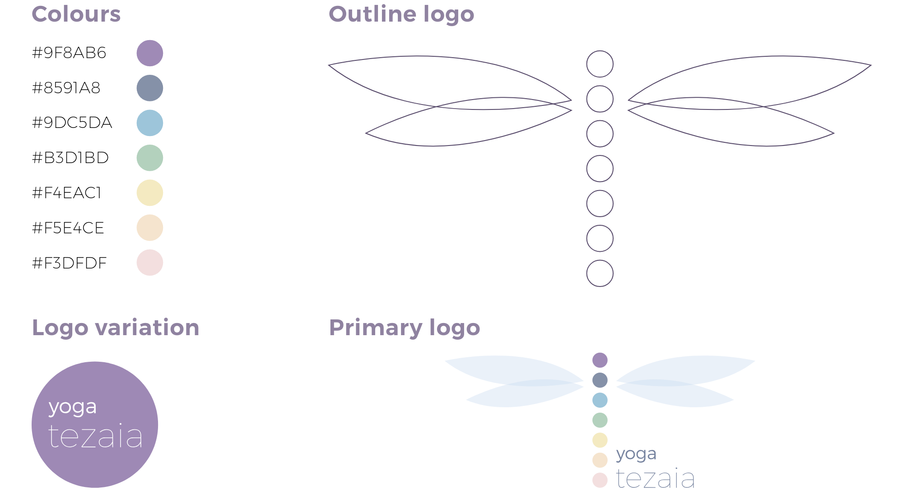
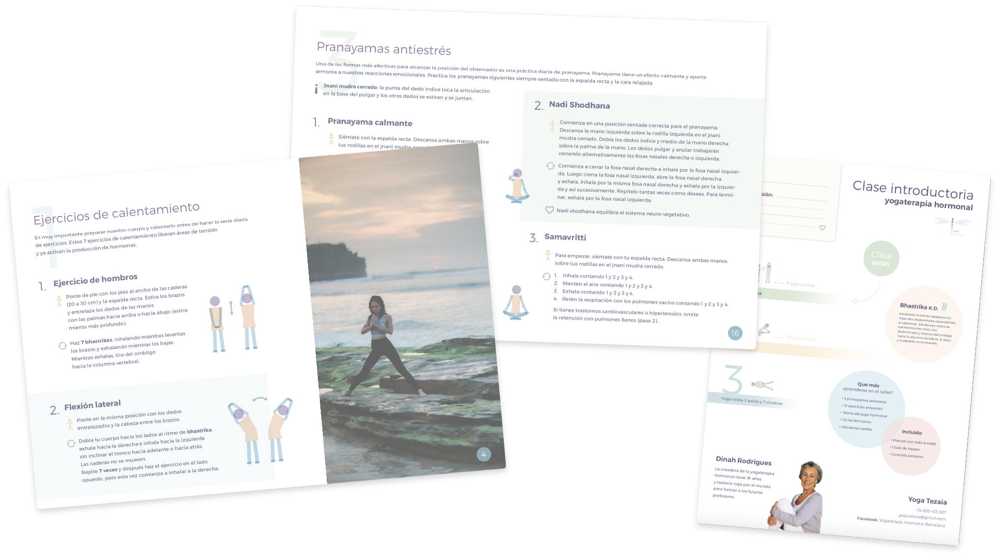
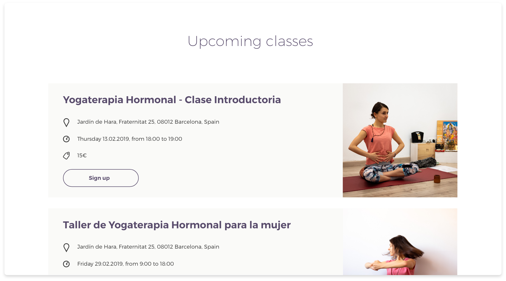
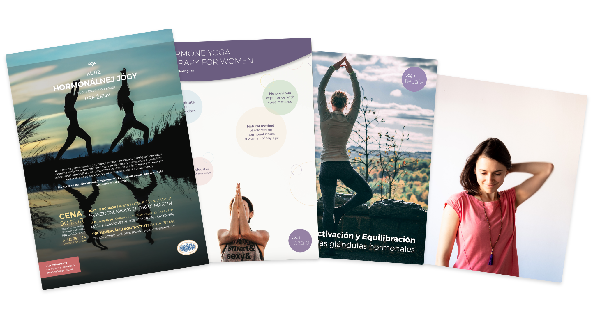

Yoga Tezaia is a young and ambitious project that aims to bring Hormone Yoga Therapy by Dinah Rodrigues to Barcelona - an untapped market with great potential. I was mandated to create a strong visual identity that would represent this emerging brand, as well as a variety of promotional materials, social media post styles and a custom-designed website with a CMS.
| Type | Branding & website |
|---|---|
| Date | Jan 19’ - Present |
| Scope | Graphic design & web design |
| Contract | Freelance for Yoga Tezaia |
Being an ongoing freelance project, I continuously design various posters, booklets or teaching materials for both print and digital use for Yoga Tezaia. Creating a new brand identity from scratch gave me full creative freedom to explore and define design principles consistent across all platforms.
I have opted for a soft and subdued colour palette to underline the non-intrusive approach of promoting the self-restoring capacities of a human body through yoga, compared to the heavy-handed, conventional approach of using pharmaceuticals. The 7 circles and their colours give homage to the 7 Chakras of the Eastern yoga traditions, in which the hormone yoga therapy is rooted. These are given wings, for hormone yoga to be spread among women by Tezaia (who also has strong personal affinity towards dragonflies).
Upon completion, class participants receive a manual that contains detailed explanation of all hormone yoga exercises to practice at home. The use of photos as visual support for the explanations is prohibited by Dinah Rodrigues, the founder of hormone yoga therapy. To provide visual aid within these limitations, I designed simple stick figures in key postures for each exercise used throughout the manual, alongside custom icons that mark important tips, breath techniques used, health benefits of a given exercise and more. Additional materials were designed for an introductory class, which summaries the hormone yoga therapy method.
Yoga Tezaia offers classes in four languages, in multiple countries. The class locations and times differ, as they are mostly organised in the form of intensive 1 to 2-day seminars hosted by local yoga studios. Therefore, I chose to implement a modern, fully responsive website in Webflow, giving Yoga Tezaia access to a CMS, which makes adding new upcoming classes to the website easy. Webflow also gives me the freedom and speed in implementing designs, setting up SEO for the site and adding new sections in the future (e.g. a blog).
As an early stage business heavily relying on successful promotion, Yoga Tezaia is building an active presence and a recognisable style on social media, as well as offline. To keep these consistent with the brand’s visual identity, I have designed post style templates, posters, flyers, etc. and defined the design guidelines that they respect. I also occasionally photograph events and classes, to give “face” and a personal touch to the brand, which companies that rely solely on stock photography tend to lack.
